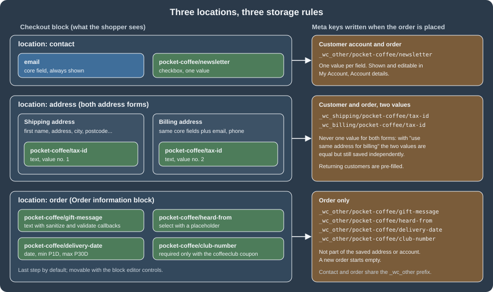
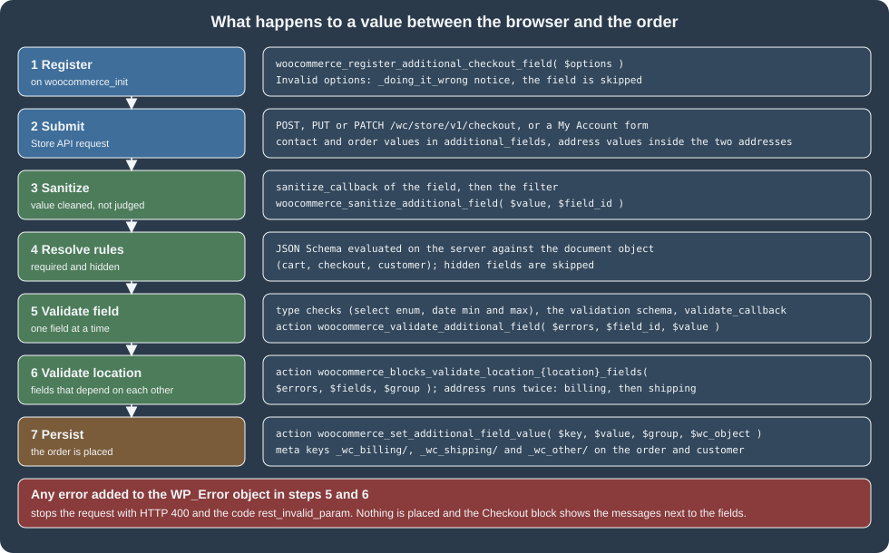

Additional Checkout Fields
|
This content was generated with the assistance of AI and should be verified against the official documentation before being relied on in production. |
Before the Checkout block, the way to add a field to the WooCommerce checkout was a filter on a PHP array
(woocommerce_checkout_fields) plus a hook that copied the posted value into order meta. The Checkout block is
rendered in the browser from block markup and talks to the server through the Store API, so none of those PHP
filters are consulted. The replacement is the Additional Checkout Fields API: one function,
woocommerce_register_additional_checkout_field(), describes a field (identifier, label, location, type, rules), and
WooCommerce renders it, validates it on the server, stores it with the customer and the order, and shows it in the
order screens. This page is the reference and the tutorial for that API on the version baseline WordPress 7.1.3 and
WooCommerce 11.2.1 (the 11.2 series was released on 2026-10-07 and 11.2.1 on 2026-10-09), checked on 2026-10-27. The API
is part of WooCommerce core, so it is available on every self-hosted store that uses the block Cart and Checkout (the
default on a new install) and needs no extra plugin. It does nothing for the classic shortcode checkout, which keeps
its own PHP filters.
The running example is the Pocket Coffee shop: a complete plugin adds a newsletter checkbox to the contact section, a Spanish tax identifier to the shipping and billing address, and a gift message, a "how did you hear about us" select, a preferred delivery date, an age confirmation and a Coffee Club member number to the order section. Every example on this page was registered by that plugin and exercised against the Store API of a local WooCommerce 11.2.1 store, and the outputs shown are the ones observed. The order data model and the Store API calls used here are explained in CRUD Objects and Data Stores and Store API, the block checkout as a whole in Cart and Checkout Blocks, and the PHP language basics on the PHP section of this site.

What the API gives you and what it does not
-
One registration call per field. The function takes an array of options and registers the field for the Checkout block. There is no settings screen: the field exists as long as the plugin that registers it is active.
-
Four field types.
text,select,checkboxanddate(thedatetype is new in WooCommerce 11.2.0). -
Three locations.
contact,address(rendered in the shipping and in the billing form) andorder. -
Rules on the server and in the browser.
required,hiddenandvalidationaccept a JSON Schema that is evaluated against the cart, the checkout state and the customer, in the browser for a fast form and again on the server for the final answer. -
Managed storage. Values are saved under prefixed meta keys on the customer and on the order, with helpers to read them. You cannot choose the meta key; the prefix is what lets WooCommerce find the values without knowing which plugin registered them.
-
Not covered. Reordering or relabelling the core fields (first name, address, phone, company) is not done with this API; the Checkout block has its own editor settings for the few core fields that can be switched on and off. Radio buttons, number inputs, textareas and file uploads are not field types. A field can be shown in exactly one location per registration, so a field that must appear in two places is registered twice under two identifiers.
Version history
| Version | Change |
|---|---|
8.6.0 |
The first experimental registration function. The |
8.7.0 |
The sanitize filter and the single-field validate action are graduated from their experimental names to |
8.9.0 (2024-05-14) |
The API graduates to stable. Individual prefixed meta keys are used for the values. The location |
9.8.0 (2025-04-07) |
Required checkboxes, and the JSON Schema rules ( |
11.0.0 (2026-08-04) |
Registering a field before the |
11.2.0 (2026-10-07) |
The |
Locations and where the values live
A field is rendered in exactly one of three locations, chosen with the location option.
| Location | Where it renders | What is stored |
|---|---|---|
|
The Contact information step at the top of the form, beside the email field. |
One value per field, written to the customer account (shown and editable in My Account, Account details) and to the order, under |
|
Inside the shipping address form and inside the billing address form. The same field cannot appear in only one of them. |
Two values per field, one for the shipping address and one for the billing address, written to the customer (so returning customers are pre-filled) and to the order, under |
|
The Order information block, by default the last step of the form; it can be moved with the block editor controls. |
One value per field, written to the order only, under |
The <field id> is the full identifier, pocket-coffee/gift-message for example, so the key of that value on an order is
_wc_other/pocket-coffee/gift-message. The constants CheckoutFields::BILLING_FIELDS_PREFIX,
CheckoutFields::SHIPPING_FIELDS_PREFIX and CheckoutFields::OTHER_FIELDS_PREFIX hold the three prefixes. The older
ADDITIONAL_FIELDS_PREFIX (_wc_additional/) is deprecated since 8.9.0.
On HPOS stores (the default for new installs since WooCommerce 8.2) the order values sit in the table
wp_wc_orders_meta. This query was run on the test store after a checkout (rows trimmed to the Pocket Coffee keys):
wp db query "SELECT meta_key, meta_value FROM wp_wc_orders_meta WHERE order_id = 19 AND meta_key LIKE '\\_wc\\_%'"meta_key meta_value
_wc_billing/pocket-coffee/tax-id 12345678Z
_wc_other/pocket-coffee/delivery-date 2026-10-30
_wc_other/pocket-coffee/gift-message Enjoy the roast!
_wc_other/pocket-coffee/heard-from friend
_wc_other/pocket-coffee/newsletter 1
_wc_shipping/pocket-coffee/tax-id 12345678ZThe same keys are returned in the meta_data array of the order in the REST API (GET /wc/v3/orders/<id>), so an ERP
integration can read them without knowing anything about the Checkout block (the order was created with
created_via set to store-api). The test store returned entries such as
{"key": "_wc_other/pocket-coffee/gift-message", "value": "Enjoy the roast!"} for the order above.
For a logged-in customer the contact and address values are also written to the user meta table. A customer
pcada (a throw-away user created for the test) placed an order with the newsletter checkbox, a gift message and the
tax identifier, and wp_usermeta afterwards held exactly the contact and address keys and not the order-location
key:
meta_key meta_value
_wc_billing/pocket-coffee/tax-id 12345678Z
_wc_other/pocket-coffee/newsletter 1
_wc_shipping/pocket-coffee/tax-id 12345678ZRegistering a field
Register fields on the woocommerce_init action, or later. Registering earlier (for instance directly while the plugin
file loads) works only by accident and since 11.0.0 produces a _doing_it_wrong warning, because translated labels
would be loaded before translations are ready. The function can be called before woocommerce_blocks_loaded has run:
in that case it re-hooks itself to that action and runs later. If the registration fails, a _doing_it_wrong notice is
raised (visible with WP_DEBUG on) and the field is skipped, so the checkout still works without it.
add_action( 'woocommerce_init', 'pocket_coffee_register_checkout_fields' );
function pocket_coffee_register_checkout_fields() {
woocommerce_register_additional_checkout_field(
array(
'id' => 'pocket-coffee/newsletter',
'label' => __( 'Send me the monthly roast calendar', 'pocket-coffee-checkoutfields' ),
'location' => 'contact',
'type' => 'checkbox',
)
);
}General options
| Option | Meaning | Required | Default |
|---|---|---|---|
|
The identifier, |
Yes |
None |
|
The label, also used as the placeholder. |
Yes |
None |
|
The label shown when the field is optional. |
No |
The label with "(optional)" appended |
|
|
Yes |
None |
|
|
No |
|
|
HTML attributes of the input element, as an array. Not supported on |
No |
|
|
|
No |
|
|
|
No |
|
|
A JSON Schema (or a list of them) the value must satisfy. |
No |
|
|
|
No |
Type specific, usually returns the value unchanged |
|
|
No |
Adds an error when the field is required and empty |
|
Whether the value is listed on the order confirmation page. Present in the 11.2.1 source with the default |
No |
|
Options of one type
| Type | Option | Meaning |
|---|---|---|
|
|
Required. A list of |
|
|
Shown as the first entry. It is not selectable when the field is required. The default is "Select a $label". |
|
|
Message when a required checkbox is not ticked. The default is "Please check this box if you want to proceed." |
|
|
The earliest and latest date the shopper can pick. Each is an absolute |
|
none |
Only the general options. |
The date bounds are evaluated when the field is rendered and again when the value is submitted. Never resolve a relative
date yourself with date() and strtotime() at registration time: the result would be stale at submission. Use the
duration. Express both bounds in the same unit (avoid P30D together with P1M) and do not mix absolute dates and
durations unless they cannot overlap; if the bounds resolve to an empty range, WooCommerce ignores them, the field is
unbounded, and a log warning is written. The value is always stored as YYYY-MM-DD, shown to the shopper in the
browser locale, and printed in pages and emails with the site date format from Settings, General.
Attributes
attributes maps one to one onto HTML attributes of the input. The accepted keys are data-*, aria-*,
autocomplete, autocapitalize, pattern (not on checkboxes), title, maxLength and readOnly. The last two are
camelCase because they are given to a React element. autofocus and disabled are intentionally not passed through.
An unsupported key (for example onclick) raises a _doing_it_wrong notice and is dropped; the field is still
registered.
Registration errors
These messages were produced by calling the function with bad options on the test store (with notices captured through
the doing_it_wrong_run action; the field is skipped in every case except the last two):
| Options | Message |
|---|---|
|
A checkout field id must consist of namespace/name. |
|
Registering a field with type "radio" is not supported. The supported types are: text, select, checkbox, date. |
|
The field location is invalid. |
|
Fields of type "select" must have an array of "options". |
|
The "min" property of a "date" field must be a duration in whole days, but "PT1H" includes a time component. |
|
Invalid attribute found: onclick are not allowed. The field is registered without it. |
|
Registering a field with hidden set to true is not supported. The field is registered as visible. |
A complete plugin
This is the plugin used for every result on this page. It declares compatibility with HPOS and with the block
Cart and Checkout (a plugin that registers checkout fields should declare it, otherwise WooCommerce treats its
compatibility as uncertain on the Features settings screen), registers eight fields in the three locations, and logs the saved values when an order is
placed. Fields are registered inside one function hooked to woocommerce_init. The header uses the
Requires Plugins header so that WordPress refuses to activate it without WooCommerce. The file passes
phpcs --standard=WooCommerce-Core (PHP_CodeSniffer 3.13.6, WooCommerce Sniffs 2.0.0) with no findings.
<?php
/**
* Plugin Name: Pocket Coffee Checkout Fields
* Description: Adds order, contact and address fields to the WooCommerce Checkout block.
* Version: 0.1.0
* Requires at least: 7.0
* Requires PHP: 7.4
* Requires Plugins: woocommerce
* License: GPL-2.0-or-later
* Text Domain: pocket-coffee-checkoutfields
*
* @package PocketCoffee
*/
defined( 'ABSPATH' ) || exit;
add_action( 'before_woocommerce_init', 'pocket_coffee_declare_checkoutfields_compat' );
add_action( 'woocommerce_init', 'pocket_coffee_register_checkout_fields' );
/**
* Declares HPOS and Cart/Checkout block compatibility.
*/
function pocket_coffee_declare_checkoutfields_compat() {
if ( class_exists( \Automattic\WooCommerce\Utilities\FeaturesUtil::class ) ) {
\Automattic\WooCommerce\Utilities\FeaturesUtil::declare_compatibility( 'custom_order_tables', __FILE__, true );
\Automattic\WooCommerce\Utilities\FeaturesUtil::declare_compatibility( 'cart_checkout_blocks', __FILE__, true );
}
}
/**
* Registers the Pocket Coffee checkout fields.
*/
function pocket_coffee_register_checkout_fields() {
// Contact section: a checkbox saved to the customer account.
woocommerce_register_additional_checkout_field(
array(
'id' => 'pocket-coffee/newsletter',
'label' => __( 'Send me the monthly roast calendar', 'pocket-coffee-checkoutfields' ),
'optionalLabel' => __( 'Send me the monthly roast calendar', 'pocket-coffee-checkoutfields' ),
'location' => 'contact',
'type' => 'checkbox',
)
);
// Order section: a free-text gift message with a length limit and a sanitize callback.
woocommerce_register_additional_checkout_field(
array(
'id' => 'pocket-coffee/gift-message',
'label' => __( 'Gift message', 'pocket-coffee-checkoutfields' ),
'location' => 'order',
'type' => 'text',
'attributes' => array(
'maxLength' => 120,
'autocomplete' => 'off',
'data-field' => 'gift-message',
),
'sanitize_callback' => function ( $value ) {
return trim( wp_strip_all_tags( (string) $value ) );
},
'validate_callback' => function ( $value ) {
if ( preg_match( '#https?://#i', (string) $value ) ) {
return new WP_Error( 'pocket_coffee_gift_message_url', __( 'Links are not allowed in the gift message.', 'pocket-coffee-checkoutfields' ) );
}
},
)
);
// Order section: a select with a placeholder.
woocommerce_register_additional_checkout_field(
array(
'id' => 'pocket-coffee/heard-from',
'label' => __( 'How did you hear about us?', 'pocket-coffee-checkoutfields' ),
'placeholder' => __( 'Select a source', 'pocket-coffee-checkoutfields' ),
'location' => 'order',
'type' => 'select',
'options' => array(
array(
'value' => 'search',
'label' => __( 'Web search', 'pocket-coffee-checkoutfields' ),
),
array(
'value' => 'friend',
'label' => __( 'A friend', 'pocket-coffee-checkoutfields' ),
),
array(
'value' => 'market',
'label' => __( 'A street market', 'pocket-coffee-checkoutfields' ),
),
),
)
);
// Order section: a date field, 1 to 30 days from today (field type added in WooCommerce 11.2.0).
woocommerce_register_additional_checkout_field(
array(
'id' => 'pocket-coffee/delivery-date',
'label' => __( 'Preferred delivery date', 'pocket-coffee-checkoutfields' ),
'location' => 'order',
'type' => 'date',
'min' => 'P1D',
'max' => 'P30D',
)
);
// Order section: a required checkbox with its own error message.
woocommerce_register_additional_checkout_field(
array(
'id' => 'pocket-coffee/over-18',
'label' => __( 'I am over 18 and may buy the espresso machine', 'pocket-coffee-checkoutfields' ),
'location' => 'order',
'type' => 'checkbox',
'required' => true,
'error_message' => __( 'Please confirm your age to place the order.', 'pocket-coffee-checkoutfields' ),
)
);
// Address section: a Spanish tax id, required and validated only for Spanish addresses.
woocommerce_register_additional_checkout_field(
array(
'id' => 'pocket-coffee/tax-id',
'label' => __( 'NIF or NIE', 'pocket-coffee-checkoutfields' ),
'location' => 'address',
'type' => 'text',
'required' => array(
'type' => 'object',
'properties' => array(
'customer' => array(
'properties' => array(
'address' => array(
'properties' => array(
'country' => array( 'const' => 'ES' ),
),
),
),
),
),
),
'hidden' => array(
'type' => 'object',
'properties' => array(
'customer' => array(
'properties' => array(
'address' => array(
'properties' => array(
'country' => array( 'not' => array( 'const' => 'ES' ) ),
),
),
),
),
),
),
'validation' => array(
'type' => 'string',
'pattern' => '^[0-9XYZ][0-9]{7}[A-Z]$',
'errorMessage' => __( 'Enter a NIF or NIE such as 12345678Z.', 'pocket-coffee-checkoutfields' ),
),
)
);
// Order section: required only when the Coffee Club coupon is in the cart.
woocommerce_register_additional_checkout_field(
array(
'id' => 'pocket-coffee/club-number',
'label' => __( 'Coffee Club member number', 'pocket-coffee-checkoutfields' ),
'location' => 'order',
'type' => 'text',
'required' => array(
'type' => 'object',
'properties' => array(
'cart' => array(
'properties' => array(
'coupons' => array(
'contains' => array( 'const' => 'coffeeclub' ),
),
),
),
),
),
)
);
}
/**
* Logs the values of the additional fields when the order is placed.
*
* @param WC_Order $order The order being processed.
*/
function pocket_coffee_log_checkout_fields( $order ) {
$fields = Automattic\WooCommerce\Blocks\Package::container()->get( Automattic\WooCommerce\Blocks\Domain\Services\CheckoutFields::class );
wc_get_logger()->info(
sprintf(
'Order %1$s placed with fields %2$s',
$order->get_order_number(),
wp_json_encode(
array(
'other' => $fields->get_all_fields_from_object( $order, 'other' ),
'billing' => $fields->get_all_fields_from_object( $order, 'billing' ),
'shipping' => $fields->get_all_fields_from_object( $order, 'shipping' ),
)
)
),
array( 'source' => 'pocket-coffee-checkoutfields' )
);
}
add_action( 'woocommerce_store_api_checkout_order_processed', 'pocket_coffee_log_checkout_fields' );During testing the registration was hooked only for requests that carried a test header, so that other checkouts on the same test store were not affected; the code above is the same without that guard. The unguarded plugin would add required fields to every Store API checkout of the store, which is the point of the API but also the reason to try required fields on a staging copy first.
Conditional rules with JSON Schema
required, hidden and validation take JSON Schema (Draft-07). A schema in required or hidden describes the
state in which the property applies: the field is required (or hidden) when the document object matches the schema. A
schema in validation describes what a valid value looks like. The schemas run in the browser as the form is edited
and on the server on every update and at order time, with two different engines behind one abstraction (AJV and Opis,
respectively, according to the documentation), so only the common subset of the language is dependable. If the required or hidden
property is a list of schemas, the field is required or hidden when any of them matches. Keep schemas small: complex
conditions slow the checkout.
The document object
The schema is evaluated against this object. All property names are snake_case, and prices are integers in the smallest currency unit.
| Path | Content |
|---|---|
|
Array of applied coupon codes. |
|
Array of the selected rate IDs, |
|
Array of product IDs, repeated once per unit of quantity. |
|
Array of product types in the cart ( |
|
Total quantity and total weight. |
|
Whether the cart ships, and whether the shopper prefers Local Pickup. |
|
Totals in the smallest currency unit, after discounts, shipping and taxes. |
|
Extension data, the same as the |
|
The account checkbox, the order note and the selected payment method ID. |
|
Values of the fields in the |
|
The customer ID, |
|
The core address fields plus the additional fields of the |
|
A dynamic alias: the billing address while a billing value is evaluated, the shipping address while a shipping value is evaluated. |
|
Values of the fields in the |
The full schema of the document object ships with WooCommerce as
src/Blocks/Domain/Services/CheckoutFieldsSchema/checkout-document-schema.json.
Examples
Required and hidden only for Spanish addresses (the Pocket Coffee tax identifier). The address alias makes the same
registration work for both address forms:
woocommerce_register_additional_checkout_field(
array(
'id' => 'pocket-coffee/tax-id',
'label' => __( 'NIF or NIE', 'pocket-coffee-checkoutfields' ),
'location' => 'address',
'type' => 'text',
'required' => array(
'type' => 'object',
'properties' => array(
'customer' => array(
'properties' => array(
'address' => array(
'properties' => array(
'country' => array( 'const' => 'ES' ),
),
),
),
),
),
),
'hidden' => array(
'type' => 'object',
'properties' => array(
'customer' => array(
'properties' => array(
'address' => array(
'properties' => array(
'country' => array( 'not' => array( 'const' => 'ES' ) ),
),
),
),
),
),
),
'validation' => array(
'type' => 'string',
'pattern' => '^[0-9XYZ][0-9]{7}[A-Z]$',
'errorMessage' => __( 'Enter a NIF or NIE such as 12345678Z.', 'pocket-coffee-checkoutfields' ),
),
)
);Required only when a coupon is in the cart (an array property is matched with contains):
'required' => array(
'type' => 'object',
'properties' => array(
'cart' => array(
'properties' => array(
'coupons' => array(
'contains' => array( 'const' => 'coffeeclub' ),
),
),
),
),
),The server-side results of those three schemas on the test store, each from a real Store API checkout (a guest cart with one product):
| Situation | Result | What came back |
|---|---|---|
Spanish address, tax id |
200, order created |
Order saved with |
Spanish address, tax id |
400 |
|
Spanish address, tax id missing |
400 |
|
German address, no tax id (virtual product) |
200 |
The field is hidden and not required, so nothing is demanded. |
Cart with the |
400 |
|
Same cart with member number |
200 |
Order created. |
On the server the invalid tax id produced the generic message "Please provide a valid NIF or NIE" and not the
errorMessage text of the schema; the custom message is a client-side feature (the key is not standard JSON Schema),
and the server-side behaviour was observed through the Store API only. Check the final wording in a browser before you
rely on it.
Comparing with other fields and the JSON pointer syntax
Inside validation, the keyword $data refers to another value with a JSON pointer, which makes cross-field rules
possible. A field name with a slash is escaped as ~1 in a pointer: pocket-coffee/club-number is written
pocket-coffee~1club-number. A pointer starting with a number is relative to the current value (1/phone is the
sibling phone, 2/id goes up two levels), and one starting with / is absolute. The 0/ prefix anchors an absolute
pointer at the root, which is how the dynamic customer/address alias is used from an address field:
0/customer/address/phone.
// An alternative email that must not equal the billing email.
'validation' => array(
'type' => 'string',
'format' => 'email',
'not' => array(
'const' => array( '$data' => '/customer/billing_address/email' ),
),
'errorMessage' => 'Please enter a valid alternative email.',
),Date fields
A date field holds a string (type: string, format: date). Besides min and max on the field, the validation
schema understands the AJV date comparison keywords formatMinimum, formatMaximum, formatExclusiveMinimum and
formatExclusiveMaximum, each taking a date or a $data reference to another field. Use min and max when the
bound is a fixed date or a duration, because they also restrict the calendar widget, and keep the schema for rules that
compare two fields or combine conditions (anyOf, allOf, oneOf):
woocommerce_register_additional_checkout_field(
array(
'id' => 'pocket-coffee/subscription-start',
'label' => 'Subscription start',
'location' => 'order',
'type' => 'date',
'required' => true,
)
);
woocommerce_register_additional_checkout_field(
array(
'id' => 'pocket-coffee/subscription-end',
'label' => 'Subscription end',
'location' => 'order',
'type' => 'date',
'required' => true,
'validation' => array(
'type' => 'string',
'format' => 'date',
'formatExclusiveMinimum' => array( '$data' => '1/pocket-coffee~1subscription-start' ),
'errorMessage' => 'The end must be after the start.',
),
)
);This example is shown as documented for the 11.2 date field; the $data comparison itself was not exercised on the
test store (the date range from min and max was, see below).
Sanitization and validation
The submitted value goes through two separate steps, in this order, and the Store API stops with HTTP 400 as soon as the validation finds errors.

Sanitization
Sanitization puts the value in a canonical shape (trim, uppercase, remove spaces). It must not judge validity. There
are two equivalent places: the sanitize_callback option of the registration, and the filter
woocommerce_sanitize_additional_field( $field_value, $field_key ), which runs for every additional field and must
return the value.
// The sanitize_callback of the gift message: strip tags and trim.
'sanitize_callback' => function ( $value ) {
return trim( wp_strip_all_tags( (string) $value ) );
},
// The same job done with the filter, which runs for every additional field (here, the tax id).
add_filter(
'woocommerce_sanitize_additional_field',
function ( $field_value, $field_key ) {
if ( 'pocket-coffee/tax-id' === $field_key ) {
$field_value = strtoupper( str_replace( ' ', '', $field_value ) );
}
return $field_value;
},
10,
2
);The test posted the gift message <b>Enjoy</b> the roast! with two spaces before and after it, and the order stored
Enjoy the roast!. If a sanitize callback or filter throws, WooCommerce raises a PHP user warning and continues with the
unsanitized value, so a bug in the filter does not block the checkout but does let unsanitized data through.
Validating one field
A field is validated by its type (a select value must be one of the options, a date must be in range), by the
validation schema, by the validate_callback, and finally by the action
woocommerce_validate_additional_field( $errors, $field_key, $field_value ). The callback returns a WP_Error or
false to refuse the value. The action receives the WP_Error object by reference and has to add to it with
WP_Error::add(); returning a new WP_Error or any other value does nothing. Use an error code with a
plugin prefix, because a code that another plugin already uses can replace the message or show it in the wrong place.
// validate_callback of the gift message: no links.
'validate_callback' => function ( $value ) {
if ( preg_match( '#https?://#i', (string) $value ) ) {
return new WP_Error( 'pocket_coffee_gift_message_url', __( 'Links are not allowed in the gift message.', 'pocket-coffee-checkoutfields' ) );
}
},
// The action form, for fields you do not own.
add_action(
'woocommerce_validate_additional_field',
function ( WP_Error $errors, $field_key, $field_value ) {
if ( 'pocket-coffee/tax-id' === $field_key && ! preg_match( '/^[0-9XYZ][0-9]{7}[A-Z]$/', $field_value ) ) {
$errors->add( 'pocket_coffee_invalid_tax_id', 'Please enter a valid NIF or NIE.' );
}
},
10,
3
);The failures below are the bodies observed from POST /wc/store/v1/checkout on the test store (trimmed to the
details part):
| Value sent | Observed error |
|---|---|
Gift message |
HTTP 400, |
|
HTTP 400, detail code |
|
HTTP 400, detail code |
Required checkbox |
HTTP 400, detail code |
Required checkbox missing from |
HTTP 400, detail code |
Field identifier that is not registered ( |
HTTP 200. Unknown keys are ignored and not stored. |
Validating fields together
When validity depends on another field, for instance a confirmation field or the country, validate at the location
level. The action woocommerce_blocks_validate_location_{location}_fields fires with ( $errors, $fields, $group ),
where $fields holds the additional fields of that location only and $group is billing, shipping or other
(contact and order). For address it fires twice at checkout, once per address. Fields from other locations are not
passed in. The hooks also fire when a customer edits an address (once, for the address being edited) or the Account
details in My Account, so the same rules apply there.
add_action(
'woocommerce_blocks_validate_location_address_fields',
function ( WP_Error $errors, $fields, $group ) {
$id = $fields['pocket-coffee/tax-id'] ?? '';
$confirm = $fields['pocket-coffee/tax-id-confirm'] ?? '';
if ( $id !== $confirm ) {
$errors->add( 'pocket_coffee_tax_id_mismatch', 'The tax id and its confirmation must match.' );
}
},
10,
3
);The location action example is the documented pattern (a confirmation field registered next to the identifier); the
Pocket Coffee plugin does not register a confirmation field, so this snippet was reviewed against the 11.2.1 source,
where the hooks are called from CheckoutFields::validate_fields_for_location(), and not executed.
Reading the values
Always use the helpers rather than reading the meta keys, because they will survive future storage changes and apply the
type conversion. The helpers live on the CheckoutFields service of the blocks package.
use Automattic\WooCommerce\Blocks\Package;
use Automattic\WooCommerce\Blocks\Domain\Services\CheckoutFields;
$order = wc_get_order( 19 );
$fields = Package::container()->get( CheckoutFields::class );
// A value of an order or customer: contact and order fields use the group 'other'.
$gift_message = $fields->get_field_from_object( 'pocket-coffee/gift-message', $order, 'other' );
$billing_tax = $fields->get_field_from_object( 'pocket-coffee/tax-id', $order, 'billing' );
$shipping_tax = $fields->get_field_from_object( 'pocket-coffee/tax-id', $order, 'shipping' );
// Every registered additional field of a group, as an array.
$other = $fields->get_all_fields_from_object( $order, 'other' );
$billing = $fields->get_all_fields_from_object( $order, 'billing' );
// Include values of fields that are no longer registered.
$all_even_old = $fields->get_all_fields_from_object( $order, 'billing', true );The test store printed this when the same calls were run through WP-CLI against the order of the table above:
'Enjoy the roast!'
'12345678Z'
true
array (
'pocket-coffee/delivery-date' => '2026-10-30',
'pocket-coffee/gift-message' => 'Enjoy the roast!',
'pocket-coffee/heard-from' => 'friend',
'pocket-coffee/newsletter' => '1',
)
_wc_billing/ _wc_shipping/ _wc_other/
'_wc_other/'
'1'The first three lines are get_field_from_object() for the gift message, the billing tax id and the newsletter
checkbox (returned as the boolean true: the helper converts the stored 1 and 0). The array is
get_all_fields_from_object() for the group other, which returns the raw stored strings and only the fields that are
registered at that moment. The last three lines print the prefix constants, CheckoutFields::get_group_key( 'other' )
and the raw get_meta() value of the checkbox, which is '1'.
Guest and logged-in customers
The customer object behaves differently while an order is being placed. For a guest, the additional fields are kept in
the session, so the values are there while the session lives. For a logged-in customer the value is written to the
customer only once the order is placed, so reading it from new WC_Customer( $id ) in a place-order hook returns the
previous value or nothing. At that point use wc()->customer (the customer with its session) or read the order:
// Inside a place-order hook: the order holds the value the shopper just entered.
$billing_tax = $fields->get_field_from_object( 'pocket-coffee/tax-id', $order, 'billing' );
// The most up to date value regardless of the order: the session customer.
$billing_tax_now = $fields->get_field_from_object( 'pocket-coffee/tax-id', wc()->customer, 'billing' );After an order is placed, the values on the customer and on the order are the same, but they diverge as the customer edits their account later. For anything about a specific order (an invoice, a shipping label) read the order, not the customer.
Reading the meta key directly
External tools and page builders that only see meta can read the prefixed keys, but they are managed by WooCommerce
and not a public contract. Checkbox values are stored as "1" or "0" (or an empty string when never saved), and only
the helper functions turn them into booleans.
$key = CheckoutFields::get_group_key( 'other' ) . 'pocket-coffee/newsletter'; // _wc_other/pocket-coffee/newsletter
$opted_in = '1' === get_user_meta( 123, $key, true );
echo CheckoutFields::get_group_name( '_wc_billing/' ); // billingOrder objects must be read with wc_get_order() and its methods, never with get_post_meta() on the order ID, because
HPOS keeps orders outside wp_posts; see
HPOS: High-Performance Order Storage.
Where the values show up
WooCommerce prints the values on the order confirmation page and in the order emails for fields registered with
show_in_order_confirmation (the default), formats them by type (a checkbox as Yes or No, a select as its label, a date with the site date
format), shows and lets an administrator edit them on the order edit screen, and lets customers edit the contact and
address values in My Account. Values are listed only for orders whose created_via is store-api, which is true for
orders placed with the Checkout block and false for classic checkout orders and orders created in the admin, so a
shortcode checkout never prints empty checkbox values. This environment could not deliver email and the admin and
My Account screens were not opened in a browser, so these behaviours are taken from the 11.2.1 source and the official
documentation, not observed.
Compatibility hooks for existing data
Fields that already exist as order meta in a classic checkout can keep working next to the new ones. The action
woocommerce_set_additional_field_value( $key, $value, $group, $wc_object ) fires every time a value is saved, and the
filter woocommerce_get_default_value_for_{field id} ($value, $group, $wc_object) supplies a value when none is
stored. Mapping a field to a legacy key in both directions looks like this, and the run printed the three values shown
below it:
use Automattic\WooCommerce\Blocks\Package;
use Automattic\WooCommerce\Blocks\Domain\Services\CheckoutFields;
add_action(
'woocommerce_set_additional_field_value',
function ( $key, $value, $group, $wc_object ) {
if ( 'pocket-coffee/gift-message' !== $key ) {
return;
}
$wc_object->update_meta_data( '_pocket_coffee_legacy_gift_message', $value, true );
},
10,
4
);
add_filter(
'woocommerce_get_default_value_for_pocket-coffee/heard-from',
function ( $value, $group, $wc_object ) {
return $wc_object->get_meta( '_pocket_coffee_legacy_heard_from' );
},
10,
3
);
$order = wc_create_order();
$order->update_meta_data( '_pocket_coffee_legacy_heard_from', 'friend' );
$fields = Package::container()->get( CheckoutFields::class );
$fields->persist_field_for_order( 'pocket-coffee/gift-message', 'Hi Grace', $order, 'other', false );
$order->save();
echo 'legacy key: ', $order->get_meta( '_pocket_coffee_legacy_gift_message' ), "\n";
echo 'new key: ', $order->get_meta( '_wc_other/pocket-coffee/gift-message' ), "\n";
echo 'default value: ', $fields->get_field_from_object( 'pocket-coffee/heard-from', $order ), "\n";legacy key: Hi Grace
new key: Hi Grace
default value: friendThe listing creates and deletes a throw-away order only to show the effect; in a plugin the two hooks stand alone. Ideally migrate the old data to the new keys once and drop the compatibility code.
Testing with the Store API
The Checkout block sends the values as part of PUT or PATCH /wc/store/v1/checkout (the checkout state while the
shopper types; since 10.9.0 no order exists yet at that point) and POST /wc/store/v1/checkout (placing the order). The contact and order values are in additional_fields;
the address values are inside the billing_address and shipping_address objects, next to first_name. The
OPTIONS response of the checkout route lists the registered fields with their JSON types, which is a quick way to
confirm that a registration took effect. See Store API for the
Cart-Token and Nonce headers used below.
SITE=http://localhost:8081
TOKEN=$(curl -s -D - -o /dev/null "$SITE/wp-json/wc/store/v1/cart" | tr -d '\r' | awk -F': ' 'tolower($1)=="cart-token"{print $2}')
curl -s -X POST "$SITE/wp-json/wc/store/v1/cart/add-item" -H "Cart-Token: $TOKEN" -H 'Content-Type: application/json' \
-d '{"id": 10, "quantity": 1}' > /dev/null
curl -s -X PUT "$SITE/wp-json/wc/store/v1/checkout" -H "Cart-Token: $TOKEN" -H 'Content-Type: application/json' \
-d '{"additional_fields": {"pocket-coffee/gift-message": "Happy birthday", "pocket-coffee/delivery-date": "2026-10-30"}, "payment_method": "bacs"}'The state update returned status checkout-draft and echoed the values (observed, trimmed):
{
"status": "checkout-draft",
"payment_method": "bacs",
"additional_fields": {
"pocket-coffee/gift-message": "Happy birthday",
"pocket-coffee/delivery-date": "2026-10-30"
}
}A GET /checkout afterwards returned the same additional_fields, and a PUT with a select value that is not an option
was refused with HTTP 400 and rest_invalid_param. Placing the order is the same call as POST with the billing and
shipping addresses, the payment method and the complete additional_fields:
curl -s -X POST "$SITE/wp-json/wc/store/v1/checkout" -H "Cart-Token: $TOKEN" -H 'Content-Type: application/json' -d '{
"billing_address": {"first_name": "Ada", "last_name": "Lovelace", "address_1": "Calle Mayor 1", "city": "Madrid",
"state": "M", "postcode": "28013", "country": "ES", "email": "ada@example.test", "phone": "600000000",
"pocket-coffee/tax-id": "12345678Z"},
"shipping_address": {"first_name": "Ada", "last_name": "Lovelace", "address_1": "Calle Mayor 1", "city": "Madrid",
"state": "M", "postcode": "28013", "country": "ES", "pocket-coffee/tax-id": "12345678Z"},
"payment_method": "bacs",
"additional_fields": {
"pocket-coffee/over-18": true,
"pocket-coffee/newsletter": true,
"pocket-coffee/gift-message": " <b>Enjoy</b> the roast! ",
"pocket-coffee/heard-from": "friend",
"pocket-coffee/delivery-date": "2026-10-30"
}
}'The response was HTTP 200 with status on-hold (the bank transfer gateway) and this additional_fields object, in
which the gift message is already sanitized:
{
"order_id": 191,
"status": "on-hold",
"payment_method": "bacs",
"additional_fields": {
"pocket-coffee/newsletter": true,
"pocket-coffee/delivery-date": "2026-10-30",
"pocket-coffee/gift-message": "Enjoy the roast!",
"pocket-coffee/heard-from": "friend",
"pocket-coffee/over-18": true
}
}The log line written by the action woocommerce_store_api_checkout_order_processed in the plugin for the same kind of
order was (WooCommerce, Status, Logs, source pocket-coffee-checkoutfields):
INFO Order 19 placed with fields {"other":{"pocket-coffee\/newsletter":"1","pocket-coffee\/gift-message":"Enjoy the roast!","pocket-coffee\/heard-from":"friend","pocket-coffee\/delivery-date":"2026-10-30"},"billing":{"pocket-coffee\/tax-id":"12345678Z"},"shipping":{"pocket-coffee\/tax-id":"12345678Z"}}From classic checkout filters to the API
Recipes from the books and blog posts about classic checkout (woocommerce_checkout_fields,
woocommerce_after_checkout_billing_form, woocommerce_checkout_process, woocommerce_checkout_update_order_meta,
and get_post_meta( $order_id, ... ) to read the result) belong to the shortcode checkout. They still work there, but
they do not touch the Checkout block, and the order meta approach with update_post_meta() is wrong on HPOS stores.
The mapping to the current API is direct.
| Classic checkout | Additional Checkout Fields API |
|---|---|
Add a key to the array in |
|
|
|
|
|
|
Nothing to write: values are saved under |
Required according to another field, with JavaScript |
JSON Schema |
Field label in the order emails with |
|
A store can stay on the classic checkout, and then the old recipes apply to it. When moving to blocks, the migration steps are: register the field with the API, add the two compatibility hooks above if other code still reads the old meta key, and remove the shortcode filters once the Cart and Checkout pages use the blocks. The Features settings screen (WooCommerce, Settings, Advanced, Features) shows the compatibility of installed plugins with the block checkout.
Pitfalls
-
The identifier is a contract. It is part of the stored meta key, of the Store API payload and of the JSON Schema pointers. Renaming a field later orphans the stored values; read old values with the third argument
trueofget_all_fields_from_object()and migrate them. -
Order, contact and address differ in persistence. An
addressfield produces two values and a returning customer is pre-filled; anorderfield is blank on the next order and is not on the customer. -
hiddenis only a JSON Schema. The booleantrueis refused; to hide a field unconditionally do not register it. -
The server has the last word. Anything the browser enforces (
pattern,maxLength, required marker) can be bypassed by calling the Store API, so every rule that matters must be also on the server through the schema or the validate hooks. -
Required checkboxes and the REST layer. The friendly
error_messageis shown by the Checkout block. A client of the Store API gets the generic REST errors listed above. -
Select values must exist. A value outside
optionsis a 400, and an old value (a removed option) stored on a past order is still readable. -
Silent skip on bad registration. The field disappears from the checkout and only a notice (visible with
WP_DEBUGon) tells why. Run a new field through the Store APIOPTIONScall or the logs after registering it. -
Do not resolve dates at registration. Use the durations of
minandmax. -
Classic checkout is a different system. A store that still renders the shortcode checkout ignores all of this.
What was run and what was not
Every registration, rule and result in the tables above came from a local WordPress 7.1.3 and WooCommerce 11.2.1 store
(PHP 8.3.36, MariaDB 11.8.9, HPOS enabled) with the Pocket Coffee plugin of this page, driven through the Store API with
a Cart-Token (guest orders and one logged-in customer through an application password), WP-CLI (wp eval, wp db
query) and the REST API v3 for reading the order meta. The static check of the plugin with the WooCommerce coding
standard passed. Not run: the Checkout block in a browser (so the rendered markup, the client-side errorMessage text,
the Order information block position and the My Account and admin order screens were not looked at), the $data
comparison between two date fields, the location validation action with a confirmation field, and email delivery.